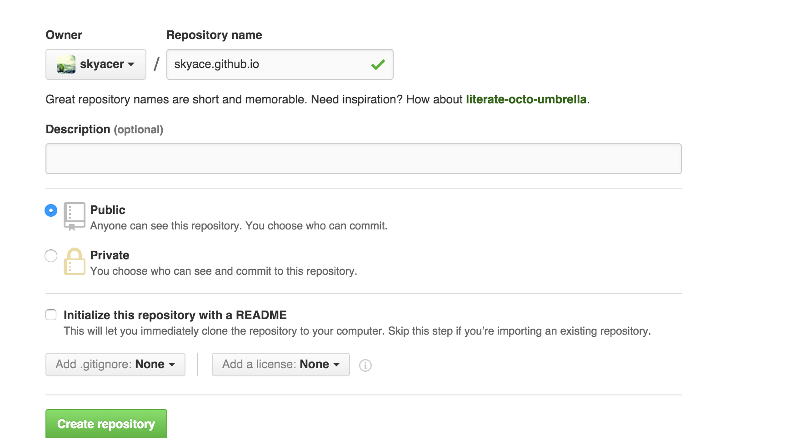

今天在设置Android Studio的时候看到这个大大的Warning，强迫症的我简直不能忍啊，然后Google了一些方法，在Stackoverflow上普遍都是要修改虚拟机参数的代理设置，但是我并没有改过。想着去把http代理的参数改回来发现mac下的java路径下并不好找，最终干脆在图形界面的java里设置
iTerm2 configure proxy
Today, I use shadowscoks to accelerate iTerm2 with global mode. But I found that iTerm2 not use shadowsocks either. So I found some method may help you to solve this problems.
socks proxy
1 | export http_proxy=socks5://127.0.0.1:1080 |
http proxy
1 | http_proxy=http://localhost:8035/ |
https proxy
1 | https_proxy=http://localhost:8035/ |
Now, after you configure these proxy, you can judge it bycurl ifconfig.me. If it shows your proxy’s ip, and it means that you are success.
Android Disable Emoji in Edittext
If you have same requirement in development, this article may help you.
Let’s how to do it in code:
1 | public static InputFilter EMOJI_FILTER = new InputFilter() { |
And you also need to set this filter in the edittext you want to disable Emoji.
1 | editText.setFilters(new InputFilter[]{EMOJI_FILTER}); |
Why it can disable Emoji.
Unicode is a computing industry standard for the consistent encoding, representation, and handling of text expressed in most of the world’s writing systems.
Emoji use area of Unicode with a range of code points from U+1F604 to U+1F539.
And Character.SURROGATEreserved the range is over the Emoji’s.
If you find a better method, you also can contact with me
Android Studio设置HTTP(S)/SOCKS代理
这里先说一下为什么要写这篇博客，因为博主本人之前在网上Google了一些办法,并没有起到效果
Hello Hexo
今天抽空折腾了一会终于部署成功Hexo+Github的个人博客了，迫不及待地想写点东西来记录一下部署的过程了~！Hello Hexo！
1.创建Github账号（如有账号请省略）
这里就不过多介绍了，直接点击右上角的sign up进行账号的创建
2.在github上创建repo

注意：这里必须以github.io结尾
3.
1 | $ hexo generate |
More info: Generating
Deploy to remote sites
1 | $ hexo deploy |
More info: Deployment